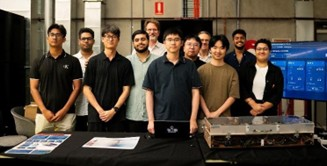
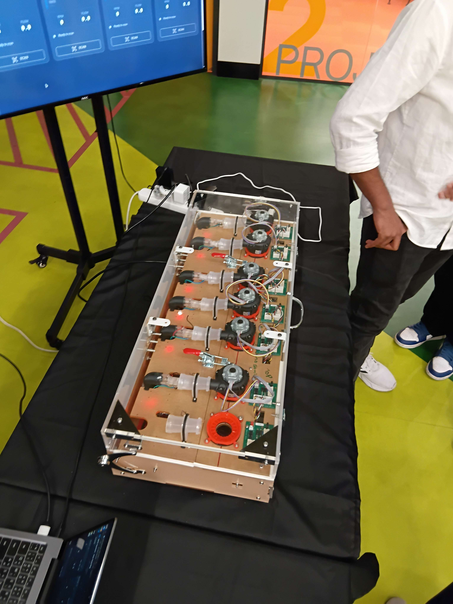

Mechatronic Engineering (Honours) graduate from the University of Technology Sydney,
with a strong interest in robotics, embedded systems, and systems engineering.
I enjoy taking complex engineering problems, breaking them into real subsystems,
and integrating the software, electronics, and mechanical elements into a reliable final system.
My interests sit at the overlap of robotics and systems engineering: sensing, control,
embedded decision-making, and building reliable real-world systems.
Robotics and Embedded Systems
I am especially interested in how intelligence becomes motion through sensing,
control, and embedded decision-making that leads to predictable behaviour.
I am comfortable working with embedded platforms such as Arduino, STM32,
and Raspberry Pi, and I am particularly drawn to projects involving controlled vehicles.
Systems Thinking
I enjoy structuring projects that involve multiple components and disciplines,
then bringing them together into one final working product.
I like being the person who keeps the mechanical, electronics, and software pieces aligned.
Leadership and Delivery
A key experience shaping how I work was my internship, where I led a team delivering a testing feature.
That experience made it clear that successful delivery is not purely technical.
It also depends on coordination, communication, accountability, and leadership.
What I Bring
I bring consistent effort and follow-through. When systems get stuck because of integration issues,
unclear requirements, or technical blockers, I stay engaged, communicate early,
and keep the work moving until the solution is stable.
Resume
Education, technical capability, experience, and supporting skills relevant to graduate engineering roles.
Professional Summary
Mechatronic Engineering (Honours) graduate from the University of Technology Sydney (UTS),
building toward a career in robotics with a particular interest in growing into team
leadership and management. Learned firsthand through leading a team of 8 on a
client-facing project during an internship.
Education
Bachelor of Engineering (Honours)
Feb 2023 – Jun 2026
University of Technology Sydney (UTS)
Majoring in Mechatronic Engineering – Second Class Honours, Division 2.
Relevant Coursework: Sensors & Control (HD), AI in Robotics (HD), Engineering Project Management (Distinction).
Capstone Project (Distinction): Built an ML model (Python, scikit-learn) to predict EV battery degradation from real-world on-road data.
Diploma of Engineering
July 2022 – Dec 2022
UTS College
GPA: 6.2
Awarded Diploma to Degree Scholarship.
Technical Skills
Robotics Simulation & Visualization
Isaac Sim, Unity, RViz, URSim (Docker)
Embedded Platforms
Arduino, STM32, Raspberry Pi
Design & CAD
SolidWorks (certified)
Programming & AI/ML
Python, scikit-learn, C/C++
Employment
Team Leader
Internship Project
Optik Consultancy
Led a team of 8 to deliver a client testing feature.
Coordinated task allocation, progress tracking, and delivery alignment across the team.
Acted as primary point of contact for client communication, relaying requirements and updates.
Customer Service Associate
Casual Employment
Yoros Seafood Liverpool
Assisted with customer orders and handled cash transactions.
Supported daily store operations, including cleaning and restocking.
Certifications
Training
Recent Training
SOLIDWORKS 2024 Essential Training — LinkedIn Learning
C++ Essential Training — LinkedIn Learning
Learning Linux Command Line — LinkedIn Learning
Core Skills
Adaptability: Stepped into a leadership role to realign a stalled team-based finance report project, bringing it back on track for a successful submission.
Critical Thinking: Applied structured problem-solving to build a machine learning model predicting EV battery degradation for a Distinction-grade capstone project.
Communication: Bridged communication between the client and a team of 8 during meetings, and managed all client contact and scheduling outside of them.
Project Management: Set project milestones and coordinated parallel electrical, software, and hardware workstreams, and curated targeted upskilling workshops for team members needing a refresher.
References
Available upon request.
Internship Reflection
Reflection on my internship experience, what changed in my thinking,
and how the experience shaped my professional direction.
This section introduces the internship context, the team environment,
and the testing feature project. It gives readers a short explanation of the experience
before they move into the reflection itself.
A short external company or LinkedIn link can sit here later, but the main focus should stay
on your role, your contribution, and what you learned.

Internship team and industry environment.
Expectations Before the Internship
Before starting my internship, I expected it to feel similar to university group projects.
I assumed the main difference would be the topic and the client, but the working style would still be familiar:
divide tasks, complete your portion, and the project naturally comes together.
I also believed that if I focused on doing my own work well and managing myself,
everything else would run smoothly.
What the Experience Was Really Like
The reality was very different and far better than I anticipated. One of the biggest surprises
was how social and diverse the experience was. I met many people across the cohort with different
backgrounds, skill sets, and ways of thinking, and that variety made the environment both more
challenging and more enjoyable.
I also did not expect to interact with so many industry experts or experience how much effort
is required beyond building the thing. Documentation, approvals, communication cycles,
and process checks are part of what makes a project real and deliverable.
Working in the lab and engaging with the technical side of the internship.
Most Important Lessons
The most important lessons I learned were about leadership and people management.
I realised quickly that a team does not succeed just because individuals are technically capable.
People arrive with different strengths, confidence levels, and personalities.
A leader’s role is not only to push tasks forward, but to help the team function as a unit and improve over time.
I learned that I cannot focus solely on deliverables if I neglect the people doing the work.
Building trust, keeping communication open, and understanding what each person needs to perform well
directly affects the quality and speed of delivery.
Value I Bring to an Employer
After this workplace experience, my value proposition to an employer is that I bring consistent effort,
resilience, and follow-through. During the internship, I demonstrated this by continuing to work through
technical blockers instead of giving up, and by maintaining clear communication with the client
throughout the process.
Even when progress was difficult, I kept the relationship constructive and focused on solutions.
By the end, the client acknowledged the effort my team and I made to get the system working,
which reinforced the value of persistence and professional communication.

Showcase or final outcome from the internship experience.
Future Direction
I see myself growing into leadership-oriented roles, whether as a team leader,
technical lead, or a supporting lead who bridges people and delivery.
I enjoy responsibility, coordination, and helping others perform at their best,
and this internship showed me that I am energised by roles that combine
technical thinking and leadership.